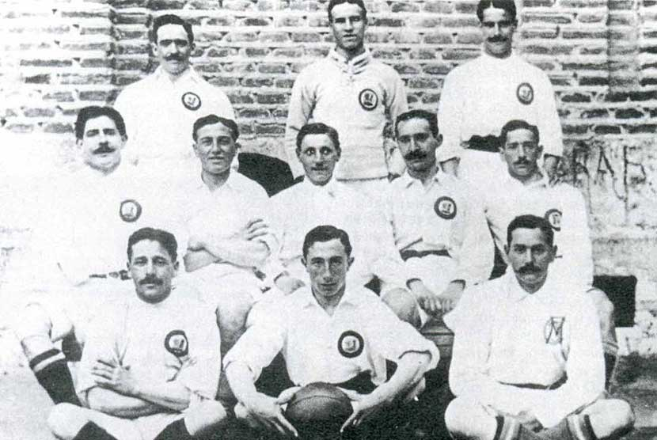
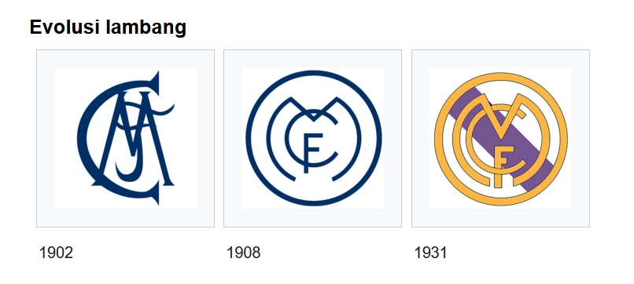
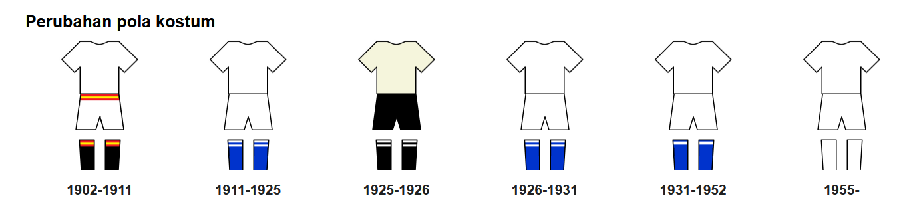
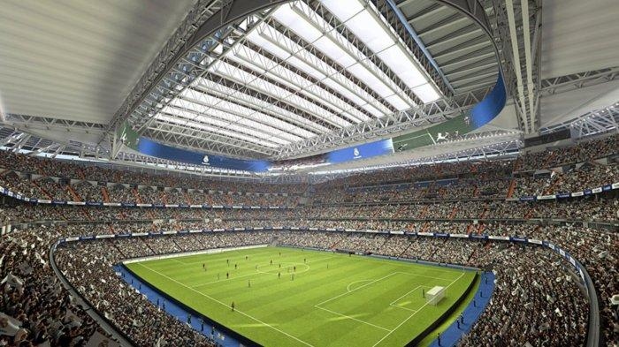

Sejarah

Didirikan pada tahun 1902 sebagai Madrid Football Club, secara tradisional mengenakan kostum kandang putih.
Kata Real ("dari kerajaan") Spanyol dan dianugerahkan ke klub oleh Raja Alfonso XIII pada tahun 1920 bersama-sama dengan mahkota kerajaan di lambang klub.
Pencapaian

Dalam kompetisi domestik, klub ini telah meraih 35 gelar La Liga, 20 gelar Piala Raja Spanyol, 12 Piala Super Spanyol, 1 Copa Eva Duarte, 1 Copa de la Liga.
Di kompetisi tingkat Eropa dan Dunia, klub ini telah meraih 14 gelar Piala Champions Eropa/Liga Champions UEFA,
2 Piala UEFA/Liga Eropa UEFA, 5 Piala Super UEFA, dan 9 kejuaraan dunia antar klub.
Lambang dan Kostum
Sejak awal berdirinya klub, Real Madrid telah melewati fase-fase evolusi lambang dan kostum klub.
Evolusi Lambang

Lambang klub pertama Real Madrid adalah desain sederhana dengan sebuah jalinan dekoratif dan tiga huruf kapital yang dituliskan sebagai "MCF" yang merupakan singkatan dari Madrid Club de Fútbol.
Perubahan pertama lambang klub terjadi pada tahun 1908, ketika mereka mengadopsi bentuk yang lebih ramping dan penempatan huruf inisial klub di dalam lingkaran.
Perubahan berikutnya dari logo kemudian tidak terjadi sampai Pedro Parages menjadi presiden klub pada tahun 1920. Pada saat itu, Raja Alfonso XIII memberikan nama tambahan bagi Madrid, yaitu "Real" yang diterjemahkan secara bebas sebagai "Kerajaan" yang kemudian membuat klub dikenal dengan nama "Real Madrid".
Sebagai perubahannya, mahkota simbol kerajaan dari Alfonso ditambahkan ke bagian atas logo dan kemudian menjadi gaya tersendiri dari klub Real Madrid Club de Fútbol. Seiring pembubaran monarki pada tahun 1931, semua simbol-simbol kerajaan (mahkota di bagian atas logo dan kata-kata Real) dihilangkan. Mahkota kemudian digantikan oleh strip murbei gelap yang mencirikan Region Castile.
Pada tahun 1941—dua tahun setelah berakhirnya Perang Saudara Spanyol—simbol dan tulisan "Corona Real" atau "Royal Crown" yang sempat dihilangkan, dipulihkan dan dipadukan dengan garis murbei Castile. Selain itu di bagian atas logo juga dibuat penuh warna, dengan warna emas yang paling signifikan, dan klub ini kembali disebut Real Madrid Club de Fútbol.
Modifikasi terbaru di bagian atas logo terjadi pada tahun 2001 ketika klub ingin lebih menonjolan citra untuk abad ke-21 dengan menstandarkan bagian atas logonya. Salah satu modifikasi yang dilakukan adalah mengubah garis murbei biru tua dengan warna biru yang agak cerah.
Evolusi Kostum

Warna tradisional kostum Real Madrid untuk pertandingan kandang adalah putih, meskipun awalnya mengadopsi garis miring biru di kaus mereka (desain itu disimpan di logo klub), tetapi sekarang ini desain tersebut tidak dipakai lagi.
Kaus kaki pertama yang dipakai berwarna biru gelap. Kaus bergaris biru kemudian digantikan oleh kaus polos berwarna putih yang mengadopsi model dari klub Corinthians pada tahun 1902.
Pada tahun yang sama, kaus kaki biru diganti dengan warna hitam.
Pada awal 1940-an, manajemen tim mengganti model kostum mereka dengan menambahkan kancing pada kaus mereka dan penempatan logo klub di sebelah kiri yang bertahan sampai saat ini.
Pada 23 November 1947, dalam pertandingan melawan Atlético Madrid di Stadion Metropolitan, Real Madrid menjadi tim Spanyol pertama yang mengenakan kaus bernomor. Sementara, warna tradisional kostum Real Madrid untuk pertandingan tandang adalah hitam atau terkadang ungu.
Perlengkapan klub saat ini diproduksi oleh Adidas yang kontraknya dimulai sejak tahun 1998.
Kaus pertama Real Madrid disponsori oleh Zanussi, yang disepakati untuk musim 1982—1983, 1983—1984, dan 1984—1985.
Setelah itu, Real Madrid disponsori oleh Parmalat dan Otaysa, sebelum kontrak jangka panjang dijalin bersama Teka pada tahun 1992.
Pada tahun 2001, Real Madrid mengakhiri kontrak mereka dengan Teka dan untuk satu musim digunakan logo Realmadrid.com untuk mempromosikan situs web resmi klub.
Kemudian, pada tahun 2002, mereka megadakan kesepakatan yang ditandatangani dengan Siemens Mobile dan pada tahun 2006, logo BenQ Siemens muncul di kaus klub.
Kemudian sponsor berikutnya Real Madrid menjadi Bwin.com untuk masalah ekonomi BenQ Siemens.
Sponsor saat ini adalah Fly Emirates.
Stadion

Setelah pindah kandang ke Campo de O'Donnell pada tahun 1912—yang kemudian bertahan untuk sebelas tahun, klub kemudian pindah kandang ke Campo de Ciudad Lineal selama setahun. Campo de Ciudad Lineal merupakan sebuah tanah kecil dengan kapasitas 8.000 penonton.
Setelah itu, Real Madrid pindah kandang ke Stadion Chamartín yang diresmikan pada tanggal 17 Mei 1923 dengan pertandingan melawan Newcastle United. Pada stadion yang memiliki kapasitas 22.500 penonton ini, Real Madrid merayakan gelar Liga Spanyol-nya yang pertama.
Setelah beberapa keberhasilan dan seiring terpilihnya Santiago Bernabéu Yeste sebagai presiden klub, ia kemudian memutuskan bahwa Stadion Chamartín tidak cukup besar untuk ambisi klub sebesar Madrid. Ia kemudian membangun sebuah stadion baru yang kemudian diresmikan pada tanggal 14 Desember 1947.
Stadion tersebut adalah Stadion Santiago Bernabéu yang dipakai sampai saat ini, meskipun stadion ini tidak memakai nama tersebut sampai tahun 1955. Pertandingan pertama yang diadakan di Bernabéu dimainkan antara Real Madrid dan klub Portugal C.F. Os Belenenses, dan dimenangkan oleh Real Madrid dengan skor akhir 3–1, dan gol pertama dicetak oleh Sabino Barinaga Alberdi.
Kapasitas stadion kemudian berubah pada 1953, seiring renovasi yang dilakukan, sehingga membuat kapasitas penonton memuncak menjadi 120.000 penonton. Sejak itu beberapa modernisasi dilakukan pada stadion, salah satunya meniadakan tempat menonton berdiri pada 1998–1999 seiring peraturan UEFA. Perubahan terakhir dilakukan pada tahun 2003, yaitu peningkatan sekitar lima ribu kursi sehingga kapasitas stadion menjadi 81.254.
Sebuah rencana untuk menambahkan atap yang dapat dibuka juga telah diumumkan kepada publik.
Stadion Bernabéu telah menyelenggarakan beberapa pertandingan kelas dunia, di antaranya Final Piala Negara Eropa 1964, Final Piala Dunia FIFA 1982, serta Final Piala Eropa/Liga Champions UEFA tahun 1957, 1969, 1980, dan 2010. Stadion ini juga memiliki jaringan transportasi sendiri, yaitu sebuah stasiun metro yang juga dinamai Santiago Bernabéu.
Pada tanggal 14 November 2007, Stadion Bernabéu mendapatkan status sebagai Stadion Elite UEFA